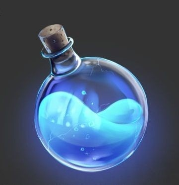
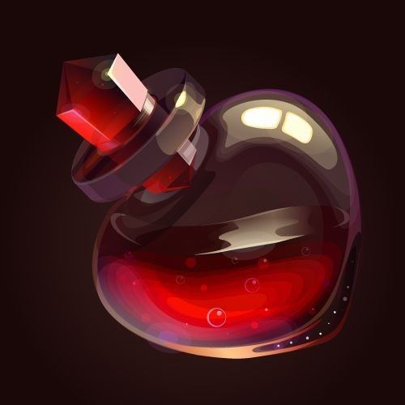
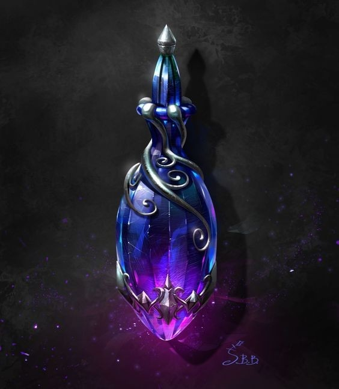
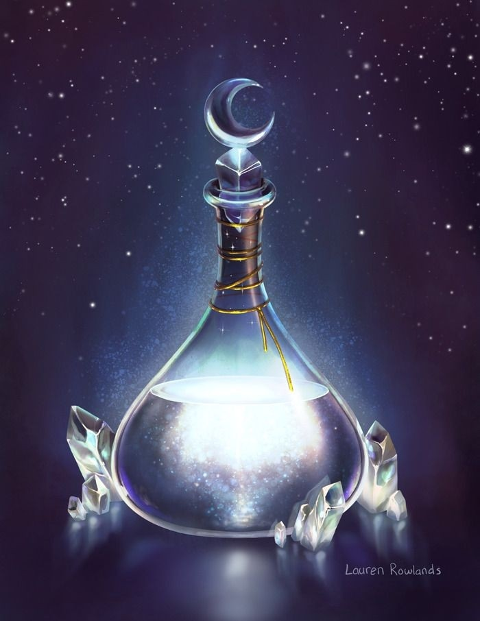
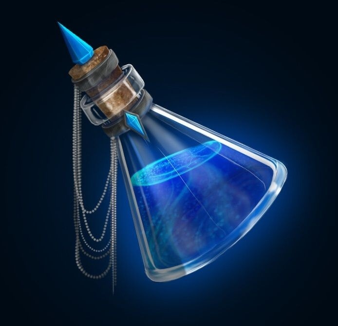
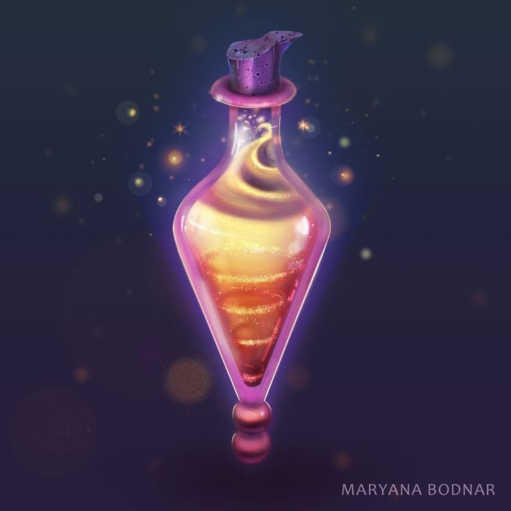
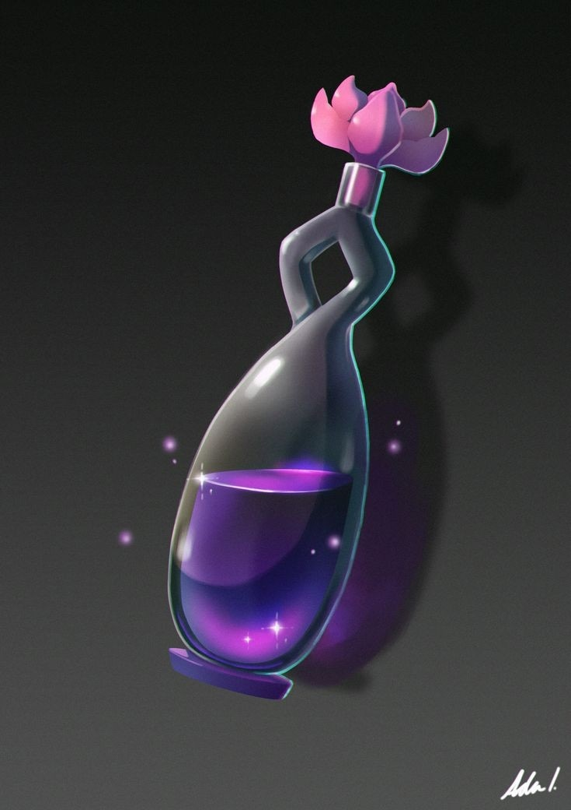
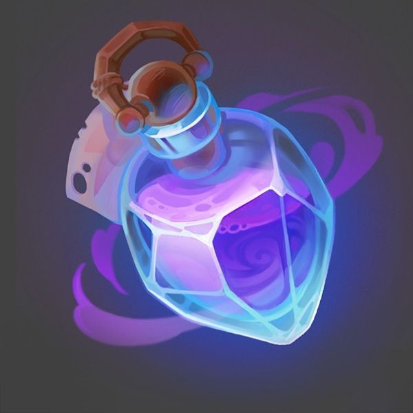

POÇÕES
Regeneração [2K]-Estoque:100
• Aumenta a Regeneração em 3 níveis por 5 turnos.

Cura [27K]-Estoque:100
• Cura instantaneamente qualquer ferimento, desde que a pessoa esteja viva.

Respiração aquática [2K]-Estoque:100
• Concede a capacidade de respirar submerso durante 10 turnos

Visão noturna [2K]-Estoque:100
• Concede uma visão perfeita em ambientes sem qualquer luz por 10 turnos.

Força [5K]-Estoque:100
• 3x em força a partir da qualidade total de pontos em tal atributo por 5 turnos.

Resistência ao Fogo [2K]-Estoque:100
• Impede que o usuário sobra queimaduras superiores a 1º grau por 5 turnos.

Agilidade[5K]-Estoque:100
• 3x em velocidade a partir da quantidade total de pontos nesse atributo por 5 turnos

Peso pena [2K]-Estoque:100
• Concede imunidade total a qualquer dano de queda por 10 turnos.

Resitência [5K]-Estoque:100
• 3x em resistência a partir da quantidade total de pontos nesse atributo por 5 turnos

ENCATAMENTOS P ARMAS
➯ Julgamento [8k]
• Causa queimaduras de 3º grau em criaturas profanas, como as de origem demoníaca ou mortos vivos, além disso, também inibe qualquer regeneração no local ferido por um turno.
➯ Fator flamejante [10k]
• A arma se incendeia de acordo com a vontade do usuário, caso se trate de uma arma a longa distância, os projéteis serão imbuídos em chamas no momento do disparo.
➯ Fator congelante [10k]
• A arma congela localmente o alvo nos ataques, caso se trate de uma arma a longa distância, os projéteis Irão congelar lentamente a pessoa w partir do local do ferimento até que sejam retirados.
➯ Fator elétrico [10k]
• A arma é imbuída em uma corrente elétrica de 2000 watts, caso se trate de uma arma a longa distância, os projéteis eram eletrocutar o alvo no instante em que acertarem.
➯ Anti-eletromagnetismo [10k]
• O equipamento passa a ser totalmente imune a magnetismo, além disso, só invés de ser um condutor, se torna um isolante no mesmo nível da borracha.
➯ Inquebrável [10k]
• O equipamento sempre irá se reconstruir, desde que tenha algum pedaço com mais de 10% do mesmo intacto.
➯ Intensificar: velocidade [15k]
• Enquanto estiver trajando o equipamento, o usuário tem sua velocidade aumentada em 3x a partir de sua quantidade total de pontos nesse atributo.
➯ Intensificar: força: [15k]
• Enquanto estiver trajando o equipamento, o usuário tem sua força aumentada em 3x a partir de sua quantidade total de pontos nesse atributo.
➯ Intensificar: residência [15k]
• Enquanto estiver trajando o equipamento, o usuário tem sua residência aumentada em 3x a partir de sua quantidade total de pontos nesse atributo.
➯ Intensificar: poder e aura [15k]
• Enquanto estiver trajando o equipamento, o usuário tem sua aura e poder aumentados em 3x a partir de sua quantidade total de pontos nesse atributo.